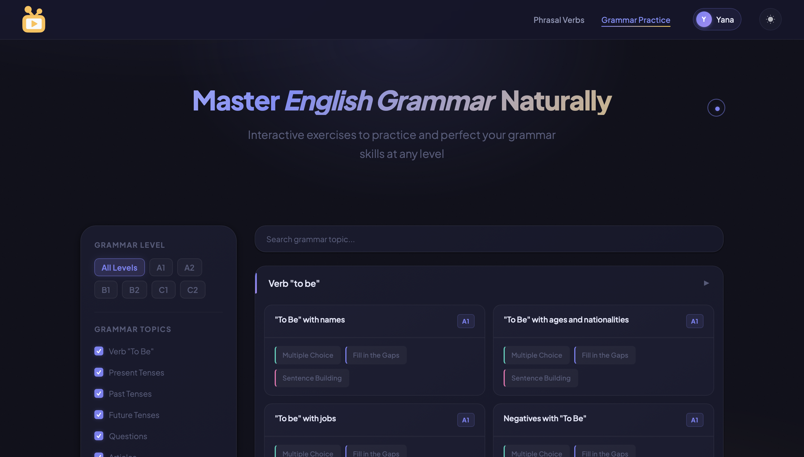
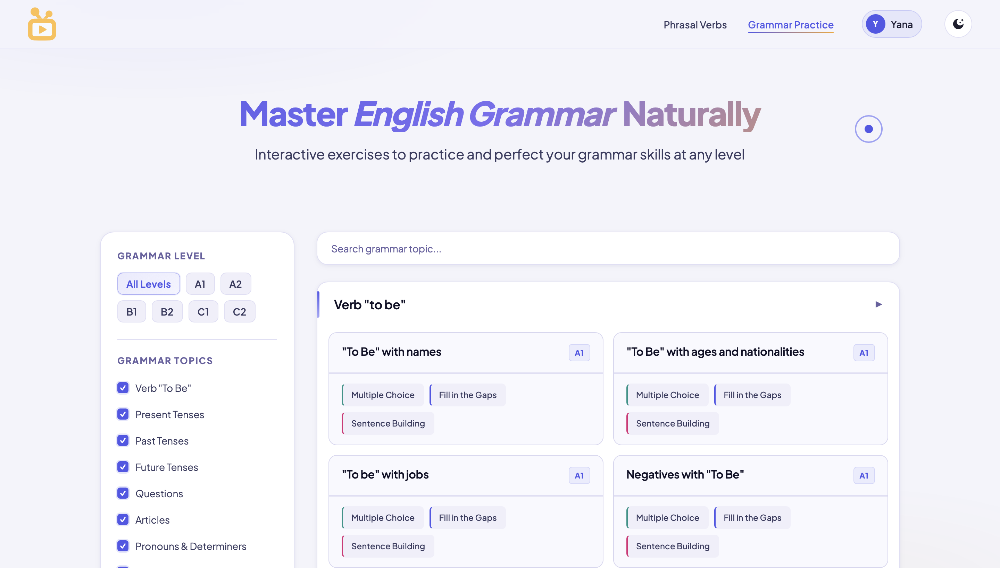
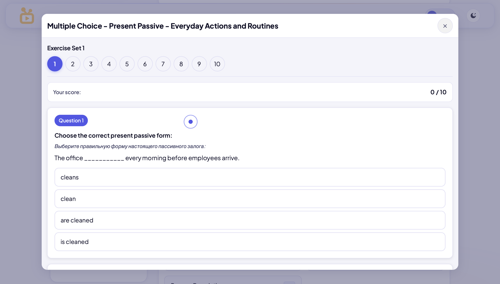
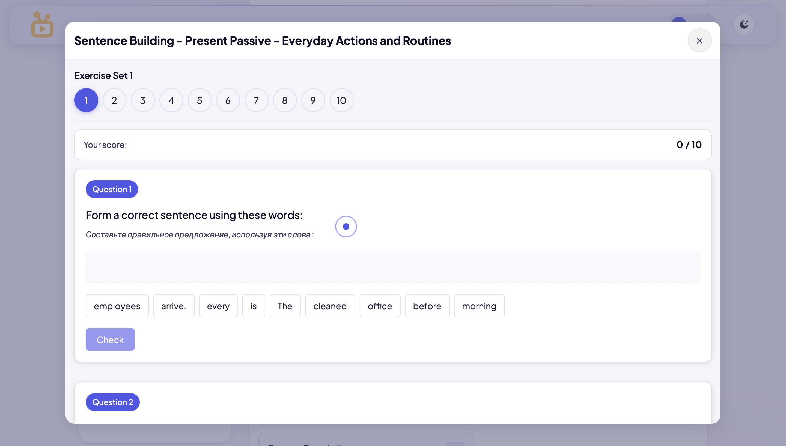
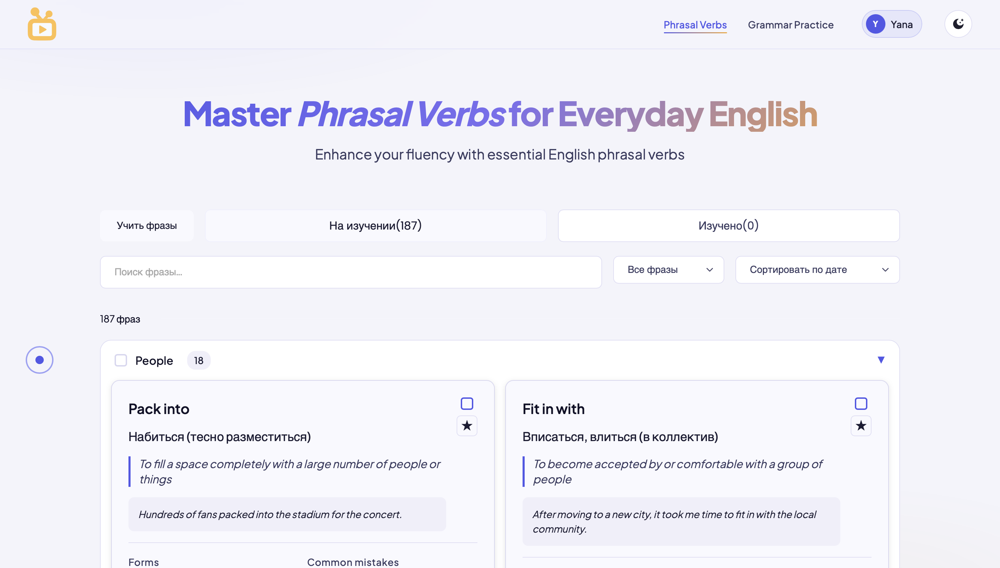
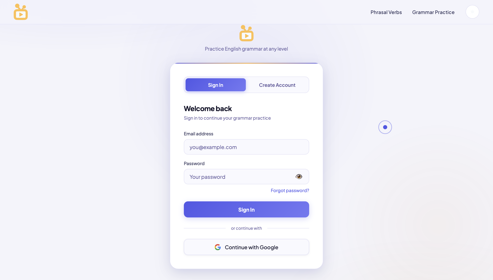
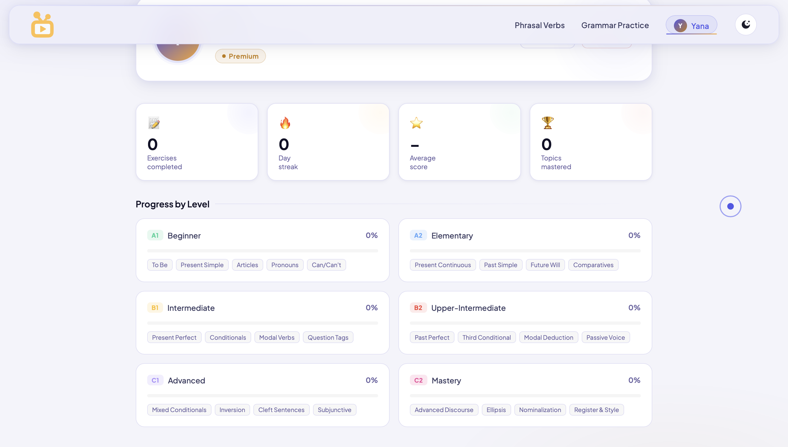

A grammar drill engine built from scratch — because no existing platform could do what my students actually needed.
After years of teaching English, I kept watching the same pattern: students understood grammar rules perfectly — then made the exact same mistakes a week later. The problem was not comprehension. It was the absence of structured, high-volume, bilingual repetition.
Students needed three or four different tools to cover grammar, vocabulary, phrasal verbs, and sentence structure. No single platform provided drilling at depth — all prioritised variety over repetition volume.
My students knew the rules. They could explain them. But under pressure the wrong pattern fired automatically. The solution was not more theory — it was a system designed around controlled, high-density repetition.
No formal research agency. No handed-over brief. The research was 8 years of teaching — every mistake my students made was a data point that informed architecture, content, and UX.
Derived from direct teaching experience across multiple countries and student profiles. Not hypothetical — composite portraits of real people I taught.
The architecture is designed around one principle: minimise the distance between landing and drilling. The exercise is always one or two clicks away.
The primary flow was designed to eliminate friction at every step. A new user should be able to start their first exercise without creating an account — and sign up only when they feel the value.
B1 student, Russian native, first time trying EnglishPlay to practise relative clauses before an exam. Mapped across the full emotional arc — from search to return.
| Discovery | Arrival | First Exercise | Feedback Moment | Return Decision | |
|---|---|---|---|---|---|
| Action | Googles "relative clauses exercises" in Russian | Lands on homepage, sees grammar module | Selects B1 → Relative Clauses → Fill in the Gaps | Answers incorrectly, reads bilingual explanation | Completes 12 exercises, bookmarks the site |
| Thinking | "I need something serious, not games" | "This looks clean. Let me try." | "Finally — a real B1 exercise, not beginner stuff" | "Oh! That's why it's wrong — I finally get it" | "I want to come back and finish all 100" |
| Feeling |
Frustrated
|
Curious
|
Focused
|
Clarity
|
Satisfied
|
| Pain Points | English-only resultsToo many ads | Slow load = bounce | Page reload = friction | EN-only feedback unusable at B1 | No account = no saved progress |
| Opportunities | RU-searchable content | Fast minimal homepage | Modal — zero reload | Bilingual EN+RU feedback | Supabase auth + progress save |
| EP Response | Content indexed bilingually | Lightweight fast load | Modal-based drill engine | feedbackEN + feedbackRU on every item | Dashboard with progress counter |
Both themes are fully independent systems — separate HTML, CSS, and JS files. No variable toggle, no cascading conflicts. Complete visual parity across every page and every state.







Building solo means choosing carefully. Each decision below was made after evaluating alternatives — not by default or convenience.
Needed production-grade auth with email/password, magic links, and password reset — without managing a backend. Supabase provided Postgres, real-time subscriptions, and a publishable key model that works in a static JS context. The reset-password flow parses access_token from the URL hash, calls setSession() client-side, and conditionally renders one of three states: form, success, or expired link.
Every push to main triggers an automatic build and live deploy to englishplay.org. Zero manual FTP, zero config. Automatic HTTPS, instant rollbacks.
Separate -light HTML/CSS/JS files with hardcoded redirect. Isolated CSS, no specificity conflicts, fully predictable rendering across every page.
All exercises run inside modals. Zero page navigation mid-session. History API pushState manages back-button behaviour so users exit cleanly without losing context.
Zero build step, zero bundle complexity. The exercise rendering engine is completely transparent and debuggable. Fast, deployable as static files, maintainable by one person.
40,000+ exercises stored in JS files with strict data contracts: correctAnswer always index 0 (shuffled at render time), exactly four underscores for gap markers, mandatory feedbackEN and feedbackRU strings on every object. Validation scripts check every file against the contract before commit. Hosted on GitHub — versioned, diff-able, and deployable as part of the same CI/CD pipeline as the UI.
Token-based from day one. Every colour, spacing value, and component is defined in CSS custom properties — making dark and light themes structural, not cosmetic.
Semantic tokens map across both themes. Correct/danger states use colour + icon — never colour alone. Accessibility: contrast ratios verified for all text combinations.
Primary uses gradient + glow shadow. Ghost uses 1px stroke. Hover states shift Y-2px for both — consistent micro-interaction.
Every feedback state uses icon + colour. Never colour alone. Critical for accessibility and for learners who may be colour-vision deficient.
The biggest challenge wasn't writing the exercises — it was building a system where every file could be authored consistently, validated automatically, and rendered without any edge-case handling in the engine.
Creating 40,000+ exercises across grammar topics, 3 exercise formats, and 6 CEFR levels — without a CMS, without a team — required treating content authoring as an engineering problem.
Every topic lives in its own JS file. The render engine reads these files and trusts the contract — it never needs to handle missing fields or unpredictable structures.
Exercise content is static — it doesn't change per-user, doesn't need querying, and doesn't benefit from a relational structure. Storing 40k+ exercises in JS files on GitHub means they are versioned, diff-able, and deployable as part of the same Netlify CI/CD pipeline as the UI. A database would have added cost, latency, and infrastructure complexity for zero functional gain.
The hardest problems were not design problems or coding problems in isolation — they were where design, code, and content architecture collided.
Supabase password reset sends a link containing access_token and refresh_token in the URL hash fragment. The challenge: parsing these tokens correctly client-side, calling setSession() before the user interacts with the form, and handling the expired-link edge case — all without a backend server to manage state.
Built a client-side token parser that reads window.location.hash, extracts access_token and type, calls supabase.auth.setSession() before form render, and conditionally shows the form, success, or expired-link state. Three fully self-contained visual states driven entirely by token presence — no backend required.
The site uses a shared base stylesheet plus page-specific CSS files. As the design system grew, specificity conflicts began breaking component styles — a shared button style would be overridden by a page-specific rule, or a modal style would leak into adjacent components. The CSS variable toggle approach amplified these conflicts.
Adopted a file-duplication architecture for themes: separate -light HTML/CSS/JS files with a hardcoded redirect script. This isolated each theme entirely, eliminating cross-contamination. Shared styles were refactored with explicit scope prefixes. Result: zero specificity conflicts, fully predictable rendering across both themes.
Creating 40,000+ exercises manually without a database or CMS meant the content structure itself had to enforce correctness. Any inconsistency — wrong index for the correct answer, wrong number of gap underscores, missing bilingual feedback — would break the rendering engine silently without throwing an error.
Established strict data contracts in every JS file: correctAnswer always at index 0, exactly four underscores as gap marker, mandatory EN and RU feedback strings. Built a validation script that checks every file against these contracts before commit. The content pipeline became systematic and reliable rather than error-prone.
Delivering 100 consecutive exercises inside a modal without any page navigation created a UX tension: the browser back button would exit the entire page rather than close the modal — breaking the expected navigation model and frustrating users mid-session.
Implemented History API pushState to add modal open/close states to the browser history stack. Back button now closes the modal and returns to topic selection. Combined with a progress counter inside the modal, users always know where they are in a 100-exercise session and can exit cleanly without losing context.
EnglishPlay proves that a solo developer-designer with deep domain knowledge can outperform generic platforms in a specific niche — not by having more features, but by making the right ones work with surgical precision.
The technical architecture took weeks. Creating 40,000+ exercises with consistent quality, bilingual depth, and pedagogical accuracy took months. No amount of good UI compensates for shallow content — and no amount of content compensates for a broken system to deliver it.
Each new exercise type multiplied the number of interaction states, feedback scenarios, and edge cases to handle. The modular JS architecture was not a nice-to-have — it was what made iteration possible without regression breaking existing exercises.
100 exercises per topic is the right number for automatisation — but only if the UX doesn't fatigue the user. Every micro-interaction decision (instant feedback, zero reload, progress counter) was in service of keeping students in flow long enough for the repetition to actually work.
With the benefit of a full year of production use, there are three structural decisions I would revisit from the start.